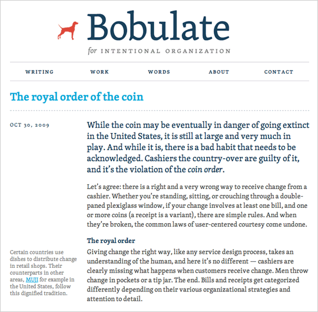
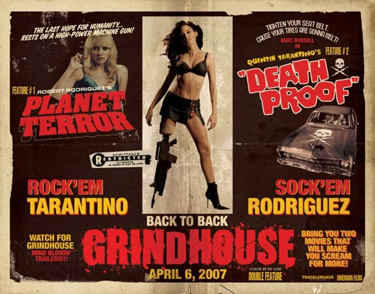
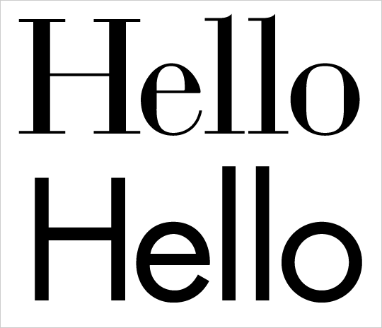

Issue № 296
Issue № 296
On Web Typography
by Jason Santa Maria November 17, 2009, Published in Graphic Design, Typography & Web Fonts
There are many books and articles on typography, but considerably few explore typeface selection and pairing. With the floodgates poised to open and the promise of many typefaces being freed up for use on websites, choosing the right face to complement a website’s design will need to become another notch in the designer’s belt. But where do we start?
Until now, using any typefaces beyond those installed with computer operating systems by default meant using images, Flash, or some other workaround. But browser makers have put the ball in our court by implementing the @font-face CSS property, which allows designers to link to any font file and pull it into their pages.
This exposed the elephant in the type foundry: Type makers have largely refused to license their raw typefaces on webpages out of concerns about piracy. The @font-face implementation has brought this concern to the forefront, prompting
all parties to figure out a mutually copacetic solution. And many solutions are either available or in the works, ranging from augmented font end-user license agreements to hosted third-party font services such as Typekit,
Typotheque, and Kernest. Web designers get more options for type, and foundries and type designers make money off of their
creations. Problem solved, right? Sorta.
Brave new world
We’ve been spoiled. Until now, chances are that if you dropped some text onto a webpage in a system font at a reasonable size, it was legible. What’s more, we know the ins and outs of the faces we’ve been forced to use. But many faces to which we’ll soon have access were never meant for screen use, either because they’re aesthetically unsuitable or because they’re just plain illegible.
The technical problems with web type also run deep. Inconsistent rendering across browsers and platforms is a substantial hurdle, as are the problems inherent in serving a font file, or more likely a font family: Page sizes can easily jump to 100k and higher. But let’s assume for a moment that these problems will get smoothed out in short order so that we can focus on what to do after that happens.
There’s a serious possibility that by gaining access to the world’s font libraries, we’re opening Pandora’s Box. Many people working on the web today have some knowledge of typography, but my hunch is that many designers are about to feel quite baffled by the new challenges they face.
Context and meaning
Being a web designer will soon require a deeper understanding of typography and how typefaces work. As we move in this direction, our options may be limited at first, but the pool of choices will steadily grow. And as we know, with great power comes great responsibility. Just because you can use the font that looks like it’s wearing bellbottoms, doesn’t mean you should.
The system fonts we commonly use such as Georgia, Verdana, and Arial have become so ubiquitous that any associations we might have with them other than “web” are pretty much gone. The aesthetic expression we were unable to achieve due to scant selection afforded us time to hone legibility on a grand scale. This has largely made the web a “set it and forget it” world, in part due to the rapid state of publishing, but also because we don’t have the fine control over typography that we have in print design.
Picky, picky
Using a typeface because it looks interesting might yield acceptable results, but really practicing the art of typography involves understanding typefaces and what they mean. Picking a good-enough face isn’t that hard, but choosing an appropriate one that fits comfortably within societal and technical concerns can be tough.
Notable type designer Zuzana Licko once said “We read best what we read most.” This notion rings true in our learned behavior, but also reveals the reason for the typographer’s toughest challenge: Reading is a personal and relative act. Reading a long passage in a blackletter face that was considered “readable” centuries ago would take us considerably more time than if that passage was set in a basic serif face. Most of what we read now is set in simple serif and sans serif typefaces, whether in print or online.
Beyond the question of readability, much of typography comes down to contrast and form. The details of a typeface can inject meaning into a design: Soft lines and stroke weights, for example, can be useful for delicate material or to give an air of elegance and dignity. Those same attributes can be juxtaposed with unexpected content to produce an ironic effect.
Here’s a list of qualities and methods to keep in mind as you venture into the widening world of web type.
The drop dead guide to choosing and pairing typefaces
As we look to our coffers for new selections of typefaces, the smart money stays true to what we know: Find typefaces that are in our general realm of readability—the ones we use and read on a daily basis. Anything that hits on those points on the “legibility spectrum” (possibly a four quadrant graph) will be best, and will be easier to read. The farther we veer away from that, the more difficult our designs will be to read. That’s not to say there isn’t a wide gray area of legibility.
Contrast
Contrast is probably the most important thing to keep in mind. When pairing typefaces, it’s important to be able to tell that there are two distinct typefaces in play, but contrast has other uses as well. Very different typefaces can play off of each other in complementary ways or resist each other to create a bit of tension, while typefaces that appear too similar can weaken the message and confuse a design’s visual language.
The basics of body text
Bobulate.com using TypeTogether’s Skolar, served via Typekit.
When choosing typefaces, I like to start by picking a text face for body copy, as this is what a reader will spend the most time looking at. For body copy, look for typefaces that are sturdy and legible at smaller sizes, and for those that have a healthy contrast between characters.
The best text faces generally have some personality, but not so much that it distracts us from the content or experience of reading. Typefaces that have a lot of personality are better reserved for display sizes, as they can become cumbersome to read in longer passages.
Read me

As text gets smaller, a slightly larger x-height and contrast can go a long way.
The usual conventions to selecting type apply for on screen use too, but due to the disparity in quality between the screen and a printed page, those conventions should be followed even more closely on screen, and possibly even exaggerated a little. High x-heights and a strong character body help keep your texts legible, even at small sizes. For instance, Verdana and Georgia, both proven screen typefaces, have a larger x-height and a bit more space between the letters so that text retains clarity even at small sizes.
What’s the message?
This movie poster from the double feature, Grindhouse, uses lots of different typefaces and styles, but does so in imitation of the kinds of posters that were emblematic of late 1970s exploitation films.
One helpful way to understand what you are designing for is to write down a general description of the qualities of the message you are trying to convey, and then look for typefaces that embody those qualities. If you are designing something serious, a playful handwritten display typeface probably won’t work. But a sturdy typeface such as Franklin Gothic could convey stability and strength while imparting an air of importance.
One typeface can be enough to say what you need to say, and two is usually plenty. If you are using more than that, have a good reason—like trying to achieve a certain aesthetic—such as replicating the look of an old boxing, film, or music poster, for example.
One sans, one serif
Bodoni and Futura have very different looking letterforms, but their structure is based on the same basic geometric principles.
One of the easiest ways to quickly create balance and contrast in typography is to choose a serif and sans serif pairing. It’s a simple, easily managed combination that can produce a cohesive look to the text if you select the right typefaces.
It’s not a hard and fast rule, but typefaces from the same designer can sometimes work very well together. As in two paintings from the same artist, sometimes you can see the designer’s hand in two typefaces they’ve made. Eric Gill’s Perpetua and Gill Sans work well together because they share some of the same strokes and curves. Similarly, typefaces that were made to be paired, like Meta Sans and Meta Serif, often work well together.
Combining more than one display or script typeface is usually a bad idea. There are exceptions to every rule, but these typefaces usually have so much personality that one is plenty and two could confuse the mood of the text.
Look for typefaces that were designed on similar principles. For instance, despite looking quite different, Futura and Bodoni can make a great pair because they were both inspired by simple geometric forms.

Baskerville and Futura, “old” juxtaposed with “new.”
Alternatively, finding two divergent typefaces can create new meaning or an interesting juxtaposition, as long as the contrast is strong. Pairing a transitional typeface like Baskerville with a more modern face like Futura could create an interesting statement on the idea of old vs. new.
Explore different styles

Type families such as Mark Simonson’s Proxima Nova contain a variety of weights which can be helpful in creating a design with diverse and flexible typographic possibilities.
Choosing typeface families with a good selection of weights and styles gives you more flexibility without needing to introduce more typefaces. Play a bold off of a light or italic weight for contrast, or try all caps or small caps with a bit of letter-spacing for a subhead. If you choose typefaces that only contain a single weight, you may find it very difficult to create the contrast that a passage requires to adequately distinguish sections visually.
To the library!
Many typefaces have an inherent connection with a cultural period or subculture. Depending on what you’re creating, this could be an advantage or a disadvantage. It’s always best to follow up on potential typeface choices by finding out where and when, and for what purpose they were made. Sometimes a typeface can have the right “look” but evoke the wrong connotations. For instance, Trajan has been appropriated as the typeface of choice for epic, thriller, romantic, comedy, and well, any kind of film, despite being nearly 1900 years old and Roman. Blackletter typefaces have long been a staple of heavy metal bands or anything that needs to feel “scary” or “dark.” Understand these cultural implications so that you can either avoid them or use them intelligently to bring clarity to your viewers.
Money, honey
We’ve been so accustomed to using system fonts that many web professionals balk at the idea of paying for fonts. But even when you use the typefaces that come with your computer, you’re using typefaces that you’ve paid to license—those costs are included in the price of your operating system. There are many free fonts out there, but most of them are free for a reason: They’re often fine at display sizes, but kerning and hinting might not be up to snuff and many aren’t complete or robust enough to be used in a serious way. Solid typefaces, like almost anything else of quality, usually cost money.
Trust your gut
Sometimes a pair of typefaces just looks or feels right together, even though you’re not sure why. These are guidelines, not laws: there are a myriad of types and styles, and sometimes you’ll be surprised what typefaces work together even when logic says they shouldn’t.
Ever forward!
The number of typefaces available to us increases every day. If your favorite font isn’t available yet, chances are it will be soon enough, though the problem of licensing, delivering, and selecting web fonts won’t be figured out overnight.
As more typefaces hit the scene, we need to understand how they can best serve our designs, and to push ourselves to move beyond mere novelty in our selections. If much of the web is made up of text—and it is—web typography can be a very powerful tool indeed.